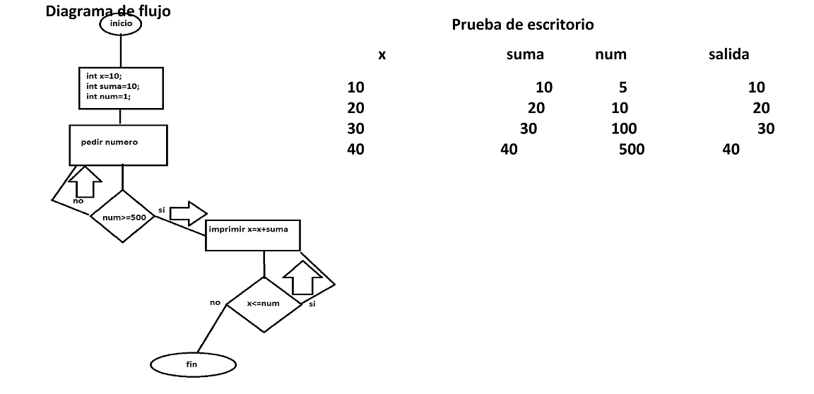
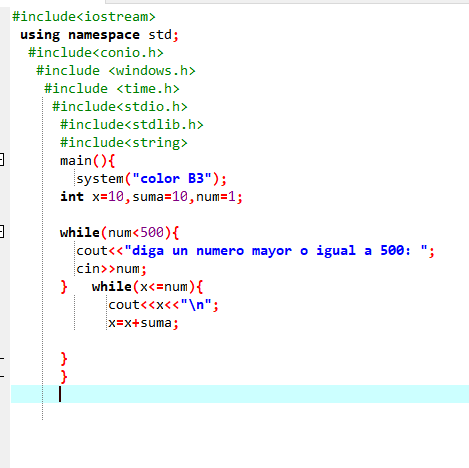

Actividad 1
La actividad era facil solo habia que prestar
atencion en clase y modificar unas cuantas cosas respecto al algoritmo
anterior de practica de la clase 1 de los numeros impares y pares
hasta el 100 y el 99 para que funcionaran, de pronto en lo que me enrede
un poco fue en la prueba de escritorio.

